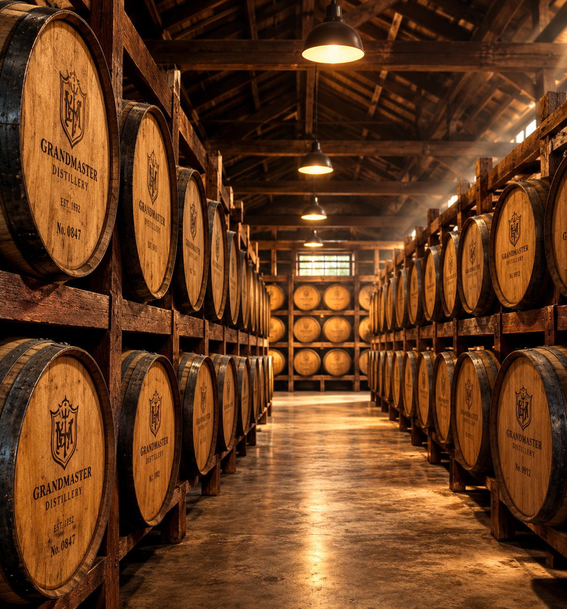
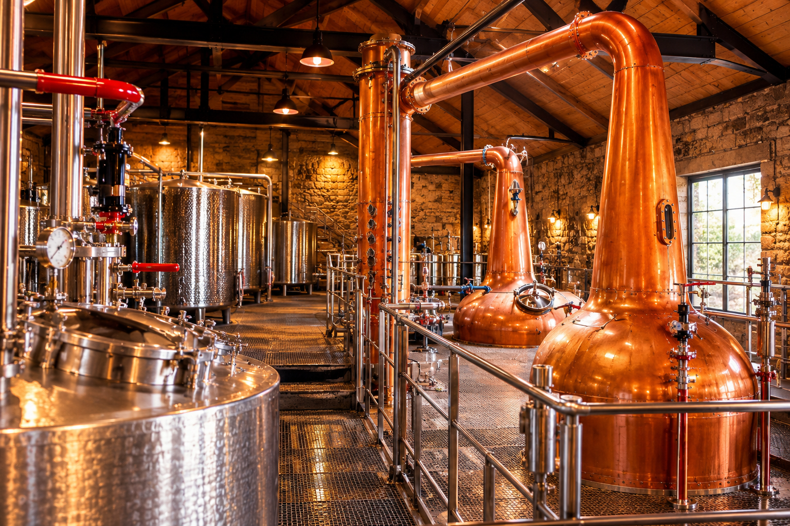
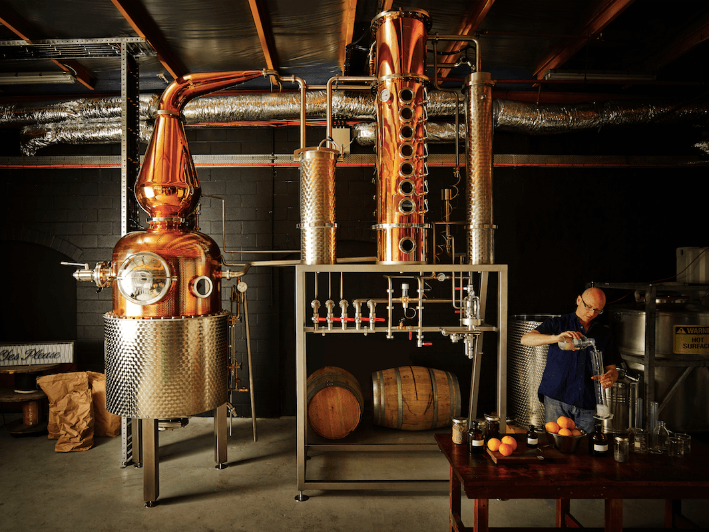

The Art of Oak Maturation: How Wood Chemistry Defines Indian Mastercraft Spirits

In the alchemy of distilling, spirit off the still is transparent, spirited, and uncompromisingly sharp. The transformative alchemy—the rich amber sheen, the nuanced bouquet of vanilla and toasted caramel, and the lingering, velvety finish—takes place inside the silent, breathing sanctum of charred oak barrels.
At Deejay Distilleries, oak maturation is not merely a waiting period; it is an active biochemical conversation between spirit, porous wood, and atmospheric micro-climates. Our aging cellars in western India leverage a distinct thermal cycle where warm tropical days expand spirit deep into the wood grain, while cool dusk breezes draw it back into the cask, extracting complex congeners at three times the speed of traditional cool-climate cellars.
The Science of Wood Chemistry: Lignin, Vanillin, and Lactones
Oak wood is a complex organic matrix composed primarily of cellulose, hemicellulose, lignin, and wood extractives. When barrels are toasted and charred by our cooperage partners, heat triggers profound molecular transformations:
- Thermal Degradation of Lignin: Extreme heat breaks complex polymers down into vanillin (producing sweet creamy vanilla notes) and syringaldehyde (introducing delicate spicy accents).
- Caramelization of Hemicellulose: Wood sugars convert into furfural and maltol, yielding subtle toasted almond, butterscotch, and sweet praline undertones.
- Oak Lactones (Quercus Lactones): Impart characteristic coconut and rich woody aroma profiles that anchor our signature reserve blends.
- Hydrolysable Tannins: Contribute structural astringency, mouthfeel weight, and the golden mahogany pigmentation that deepens year after year.
"The barrel is not a vessel of storage; it is an active ingredient. Sixty to seventy percent of a whisky's final aroma and complexity is authored entirely by the soul of the wood."
Char Levels and Cask Reconditioning
The level of barrel toasting and charring dictates how deeply the spirit penetrates before encountering charcoal filtration. At Deejay Distilleries, we employ custom Level 3 and Level 4 "Alligator Char" American White Oak barrels (Quercus alba) alongside seasoned European Oak casks (Quercus robur) previously seasoned with fortified wines.
The dense charcoal layer acts as an organic carbon filter, absorbing aggressive sulfur compounds and harsh aldehydes from the new-make spirit. Simultaneously, the toasted layer just beneath the char provides an abundant reservoir of caramelized sugars and aromatic oak lactones.


Tropical Aging: The Unique Indian Advantage
One of the defining frontiers of contemporary world whisky is tropical maturation. In Scotland or Ireland, average warehouse temperatures hover between 8°C and 15°C, resulting in an annual evaporation loss (the celebrated "Angel's Share") of roughly 1.5% to 2%.
In our temperature-controlled aging warehouses, ambient temperatures create a much higher evaporation rate—often between 8% and 11% annually. While this requires exceptional discipline in stock management, the intensified wood extraction and oxidation rate achieve a depth of flavor in 3 to 5 years that would require 12 to 15 years in temperate northern latitudes. The result is a bold, rounded spirit with remarkably softened tannins and intense aromatic concentration.
Key Insights on Deejay Maturation Standards
- Dual-Oak Strategy: Strategic balancing between sweet vanillin-forward American White Oak and structured European Oak.
- Microclimate Warehouse Management: Natural airflow convection racks that ensure even barrel breathing across tiered pallet stacks.
- Slow Hydration: Progressive proof reduction over several months using demineralized artisanal water to prevent shock precipitation.
- No Artificial Additives: Natural maturation color and uncompromised ester purity across our entire portfolio.
As global appreciation for Indian mastercraft spirits continues its exponential rise, our commitment remains uncompromising: honoring traditional cooperage heritage while pioneering modern thermal maturation science. Each bottle poured is a testament to patience, wood chemistry, and the unyielding quest for perfection.